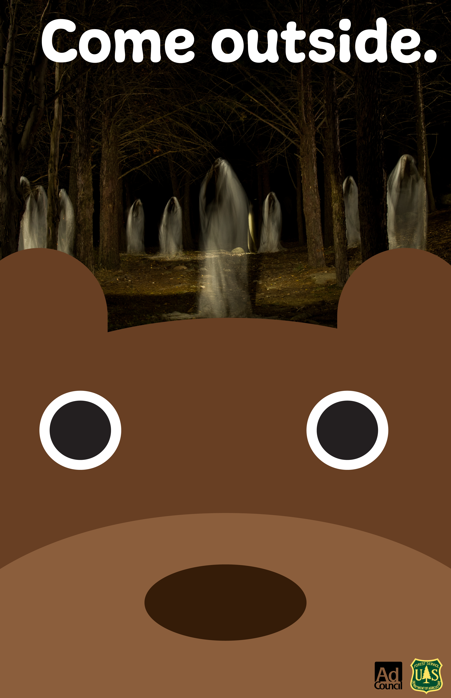
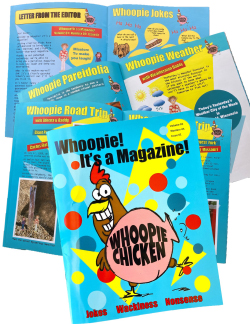
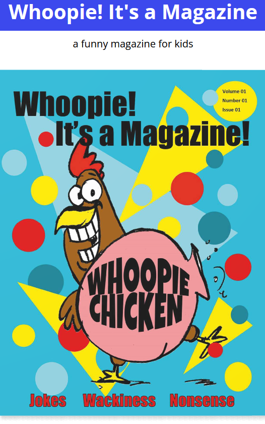
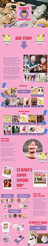
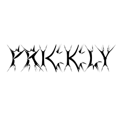
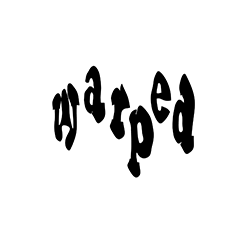
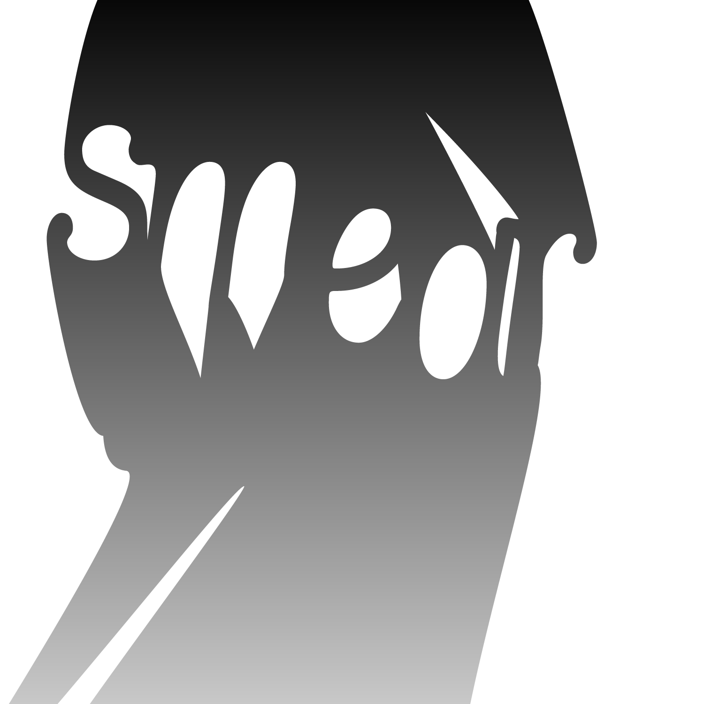

My work







![A black poster with red text the text of the poster reads:
'He goes away for almost a year at a time, and owes me a favor. But too late! He DIED yesterday.
What about his body? Somebody snatched it. Ohh. Don't cry Karen. Frosty's not gone for good.
He was made out of Christmas snow, and Christmas snow can never disappear completely. We'll need a body.
Oh, anybody's body. Can you get one from Gusto the body-snatcher? You see, when a good, jolly December wind kisses it,
it will turn into Christmas snow. It sometimes takes the form of spring and summer rain all over again but-
Why nonsense! Let's see, who do we know that's dead? You can bet your boots that I wish I was.'](images/mashup-poster-250.jpg)









